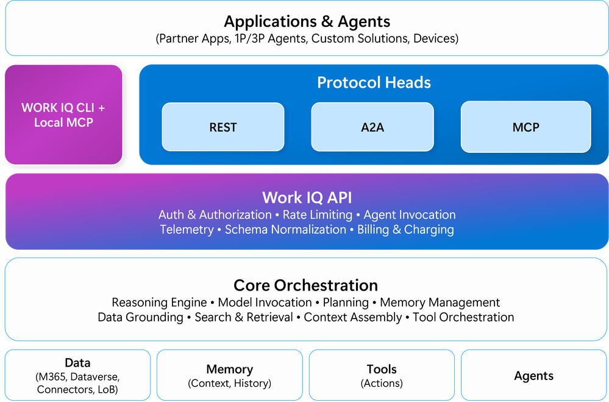
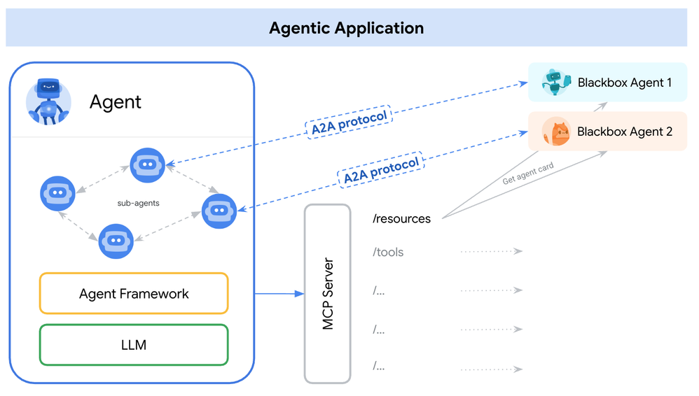

TL;DR — Microsoft launched the Work IQ API in public preview with Agent-to-Agent (A2A) protocol support. Developers can now build agents that delegate tasks to Copilot and receive responses grounded in organizational data — without building RAG pipelines, managing permissions, or orchestrating individual M365 API calls. GA planned for summer 2026. Three practical implications for those already in the middle of Copilot rollouts and extensibility strategies.
Microsoft announced the public preview of the Work IQ API, opening programmatic access to the intelligence layer that powers Microsoft 365 Copilot. Work IQ is not a new data API — it's an intelligence API: context, reasoning, grounding, and skills, all operating within the tenant's permissions and compliance policies.
The API is available in four formats:
The key point: all four surfaces share the same intelligence runtime. Behavior, grounding, and response quality stay consistent regardless of protocol.

Work IQ architecture: applications and agents connect via REST, A2A, or MCP protocol heads, all sharing the same intelligence runtime. Source: Microsoft Tech Community.
Until now, anyone who wanted to build agents that accessed M365 organizational data had two options:
A2A opens a third path: the external agent delegates work to Copilot and receives responses that are already grounded in organizational data, with permissions applied automatically. It's not an API call — it's a conversation between agents.
In practice, the code is surprisingly simple. Using the A2A SDK in .NET:
var client = new A2AClient(
new Uri("https://workiq.svc.cloud.microsoft/a2a/"),
httpClient);
var response = await client.SendMessageAsync(new SendMessageRequest
{
Message = new Message
{
MessageId = Guid.NewGuid().ToString("N"),
Role = Role.User,
Parts = [Part.FromText("What meetings do I have tomorrow that I need to prepare for?")]
}
});
Copilot handles the rest: searches emails, calendars, shared files, meeting transcripts — all filtered by the user's permissions.
Until last week, the conversation with clients was: "if you want an agent that understands organizational context, you need to build a RAG pipeline with Graph API + Azure AI Search + orchestration." Not trivial. Estimates of 4–8 weeks for a working MVP, not counting relevance tuning and governance.
With Work IQ via A2A, that pipeline already exists. The developer doesn't access raw data — they access intelligence. Copilot handles grounding, applies permissions, selects skills, and delivers contextualized responses. What was an infrastructure project becomes a protocol integration.
This doesn't eliminate custom RAG — there are scenarios where granular control over embeddings, ranking, and sources is necessary. But for the most common use case ("agent that needs to understand what's happening in the organization"), the path just got dramatically shorter.
One of the biggest friction points in enterprise agent projects is the security review. "What data does the agent access?" "How are permissions applied?" "Where is data processed?" "Is there exfiltration risk?"
The Work IQ API solves this at the architecture level:
Because the API exposes intelligence rather than raw data, it's impossible to accidentally bypass tenant security. This fundamentally changes InfoSec posture: instead of auditing every data endpoint the agent accesses, the security team validates that the agent uses Work IQ — and the guarantees are inherited.
A2A isn't "another way to call Copilot." It's an agent collaboration protocol. Microsoft's roadmap for Work IQ includes:
The emerging pattern: specialized agents (sales, HR, engineering, compliance) that delegate tasks to each other and to Copilot when they need organizational context. It's not a monolithic agent that does everything — it's an ecosystem of agents that collaborate.

Multi-agent pattern: an agentic application uses A2A to collaborate with external agents and MCP for tools and resources. Source: Microsoft Tech Community.
For those already building agents in Copilot Studio or Azure AI Agent Service, the implication is clear: plan multi-agent architecture from the start, even if the first release is a single agent. The A2A and MCP surface will be the connective tissue.
If you already have Microsoft 365 Copilot licenses and are planning extensibility:
I work with clients on generative AI rollouts and Copilot extensibility across Brazil and LATAM. If you're evaluating the Work IQ API or planning multi-agent architecture, let's talk — this conversation is getting interesting.